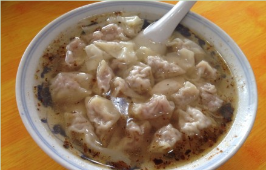
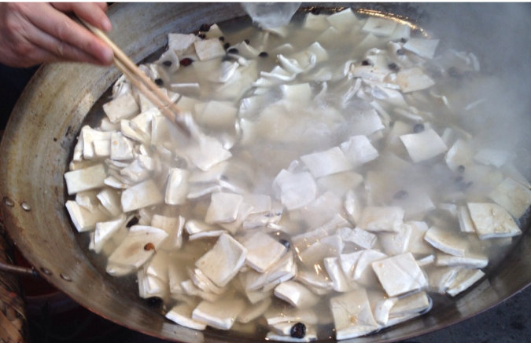

烤鸭

千里香馄饨
牛肉面

小干子
1、十字街北面的 峰波堂的酸菜鱼可以
2、小洞天的水煮肉片可以
3、南面小巷子里面 老奶奶的小干子好吃 他家的馄饨还有干丝也好吃.东门貌似没撒吃的哈!!
4、老五小那边的 福建千里香馄饨也还可以 吃多了 现在去感觉肉不是很多了
5、施记的不老鸡 辣椒很厉害
6、南苑新村对门的 小吃店 很小的一家 他家的冻面条可好吃了
7、北门还有家 十三香小龙虾 味道不错
8、南陵的冰汤 1块一碗 说又好喝又便宜 都夏天才有了
9、北门印刷厂边上的汤家正宗小刀面
10、下晚的时候在峰波堂门前有家盐水鸭也好吃
11、南门海欣超市门口的小彭家烤鸭好切
12、晚上十字街老不子家小干子不错,对面的赵家小笼包子味道更棒
13、早上文庙路上的淮南牛肉汤干拌面不错
14、西门口的郭家风味水饺更是最好!
15、弋江的三老太羊肉,在中山公园好吃吧旁边开了一个！冬天吃很过瘾，哈哈！
16、祥生花园香辣虾，也很不错的哦！
17、金都路上顺风饭店的老鸭汤(比界山的更好切)
18、还有就是十字街歪子家烧烤不错,原建委对面的桂林米线好切。
19、交警大队或五里转盘的205面条；
20、利民南路籍利隔壁的小菜饭
21、十字街竹青巷口头的渣肉饭；
22、南港旁边的雪菜排骨面；
23、荷花塘小区的剪包加稀饭。
24、利民路的顺风饭店；北门的金林饭店；金陵购物后的野味馆；另外就是几个乡镇的土菜。
25、五小文庙路有家南昌瓦罐汤不错.